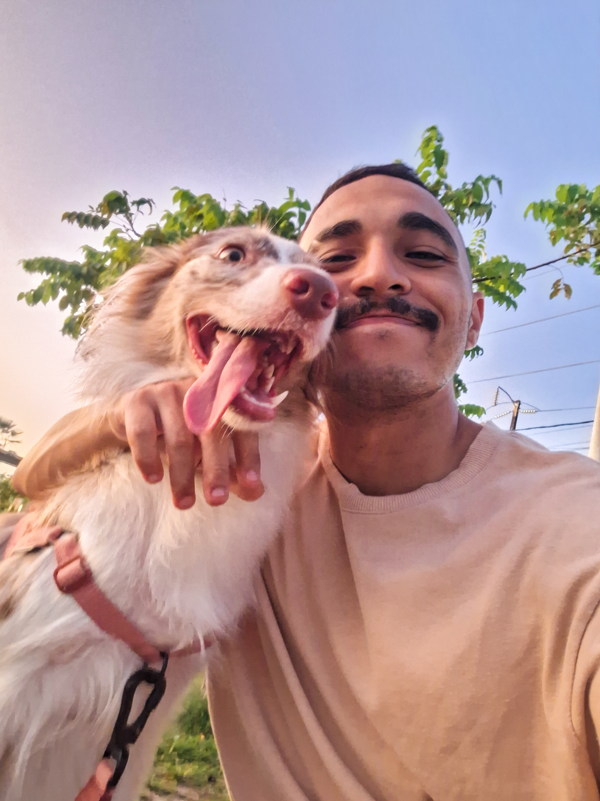

Encontre a receita perfeita!
Explore dezenas de variações das receitas favoritas entre os marombas ao redor do mundo!
Confira as últimas receitas
Dê uma olhada nas receitas mais curtidas
em alta
Capuccino
Extraordinário 4/4
Uma bebida ideal para os amantes de café, com um toque de whey.

Rômulo Furtado